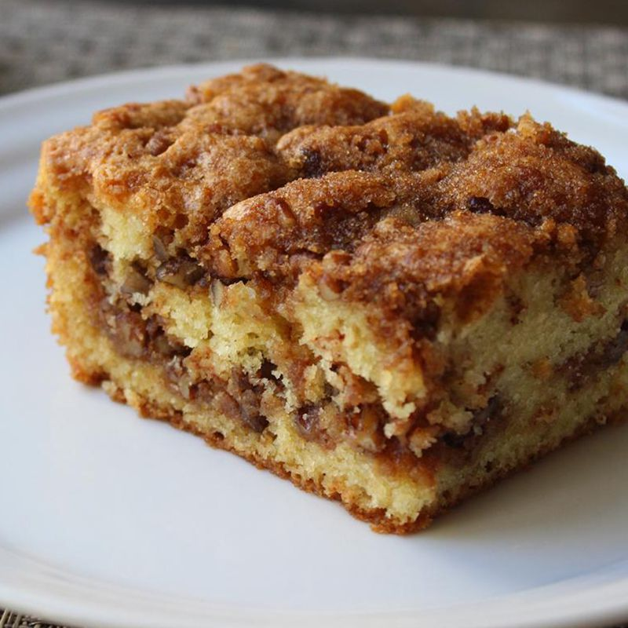

Coffee Cake

Description
Ingredients
- All purpose flour 1 cup and 2 tbsp
- Room temperature eggs 2
- Caster sugar 1/2 cup
- Brown sugar 2tbsp
- Vanilla 1/2 tbsp
- Milk 1/2 cup
- Butter 1/4 cup and 2 tbsp
- Baking powder 1/2 tsp
- Salt 1/4 tsp
- Cinnamon powder 1 tsp
Steps
- Preheat oven to 350 F
- Butter a 6 inch round pan
- Mix together cinnamon powder, 2 tbsp melted butter, 1 tbsp brown sugar and 2 tbsp flour in a bowl
- Mix together flour, baking soda & salt in a bowl
- In a microwave heat milk and butter together till the butter melts
- Beat eggs, sugar and vanilla till the mixture is in pale yellow color
- Add the milk and butter to the above mix
- Fold in flour at the end, do not over mix
- Top with cinnamon mix
- Bake for 35-40 mins or till a toothpick comes out clean